{kind=link}
A warfront battle
War machines are unlocked by the Engineer and fight in Battles against enemy war machines and in the Arena of Kings against the war machines of other players. Your battle formation consists of up to five different war machines which have individiual powers. Each war machine in your battle formation can have a crew of up to six heroes whose jewels boost the attributes of the machine. War machines can also be upgraded by the Engineer with the help of expedition tokens, blueprints and components.
Attributes
Main attributes
War machines have the three main attributes:
| Icon | Attribute | Description |
|---|---|---|
| Damage | Determines how much the damage the war machine deals to an enemy with each attack | |
| Health | Determines how much the damage from enemies the war machine can sustain | |
| Armor | Determines by how much enemy hits are reduced before dealing damage |
Each war machine has different base attributes. The base attributes can be increased by leveling up the war machine, by increasing the rarity of your war machines, by leveling up the Engineer, with blueprint upgrades, with sacred cards, with ancient artifacts and with the crew of the war machine. The basic attributes are given by the first six effects:
basic attribute = base attribute * (1 + level bonus) * (1 + engineer bonus) * (1 + blueprint bonus) * (1 + rarity bonus) * (1 + sacred card bonus) * (1 + inscription bonus) * (1 + artifact bonus)
Thereby, the artifact bonus is calculated multiplicatively between different artifacts. The battle attributes, which are the attributes used in the warfront campaign, also include the total crew bonus:
battle attribute = basic attribute * (1 + crew bonus)
Special Attributes
Each war machine also has one of three specialization: Damage, healer and tank. Healer machines also heal the foremost war machine in your team for 200% of their own damage in each round.
Each machine has a special ability that either heals your war machines or damages the opponents war machines. The chance to trigger the special ability after the machine has attacked is determined by the overdrive attribute:
| Icon | Attribute | Description |
|---|---|---|
| Overdrive | Chance to trigger the ability of the war machine |
{kind=link}
The overdrive attribute starts at 25 % can be increases by raising the rarity of the war machine by 3 % per rarity level.
Each war machine also has one of three special milestone effects that effects the main game:
| Icon | Milestone Effect | Description |
|---|---|---|
| All Attributes | Increases all of the attributes of all heroes and guardians by a certain percentage | |
| Raining Gold | Increases gold earnings by a certain percentage | |
| Firestone Finder | Increases the firestones you find by a certain percentage |
Level
Each war machine needs certain amount of 3 different components and 500 expedition tokens to increase its xp by 100. The xp requirement to level-up the war machine starts at 100 xp for level 2 and increases by 10 xp per level. Each level increases all attributes of the war machine multiplicatively by 5%:
level bonus = 1.05(war machine level – 1) - 1
List of components:
| Icon | Component | Amount for 100 xp |
|---|---|---|
| Screw | 20 | |
| Cog | 12 | |
| Metal | 1 |
{kind=link}
{kind=link}
{kind=link}
Components are individual to each war machine and are obtained by opening jewel chests. The drawn components are distributed roughly equally across your current machines. When you unlock a new machine, that machine will get nearly all components from jewel chests until it has caught up in total components with your older machines. When you have unlocked 6 machines you can favor 5 war machines to increase their chances of getting components over the rest.
Blueprint upgrades
The attributes of a war machine can also be upgraded with blueprints. Each attribute has a blueprint level. The upgrade cost starts at 100 blueprints for level 1 and increases by 5 blueprints per level. Each blueprint level increases the corresponding attribute multiplicatively by 5%:
blueprint bonus = 1.05blueprint level - 1
The blueprint level is initially capped at 5. The level cap increases by 5 for every 5 war machine levels. The blueprint levels for all attributes together determine the milestone effect. The milestone effect increases multiplicatively by 30% for every 5 total blueprint levels:
milestone effect = 1.3⌊total blueprint levels / 5⌋ - 1
Rarity
War machines have one of eight rarities. Each rarity upgrade costs a certain amount of tools and requires a certain level of the war machine.
| Level | Rarity | Color | Cost | Requirement |
|---|---|---|---|---|
| 0 | Common | |||
| 1 | Uncommon | war machine level 10 | ||
| 2 | Rare | war machine level 50 | ||
| 3 | Epic | war machine level 100 | ||
| 4 | Legendary | war machine level 160 | ||
| 5 | Mythic | war machine level 230 | ||
| 6 | Titan | war machine level 310 | ||
| 7 | Angel | war machine level 400 | ||
| 8 | Celestial | war machine level 500 |
Each rarity increases the attributes of this and other war machines as follows:
| Icon | Effect name | Description | Effect |
|---|---|---|---|
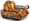 |
War machine effect | Increases the main attributes of this war machine | 5% per rarity* |
| All war machines effect | Increases the main attributes of all war machines | 5% per rarity* | |
| Mechanical fury | Increases the arena attributes of all war machines | 5% per rarity* | |
| Overdrive | Increases the chance to trigger the ability of this war machine | 3% per rarity |
{kind=link}
{kind=link}
* multiplicative effect
In particular, the rarity bonus is calculated as follows:
rarity bonus = 1.05(rarity level of this machine + rarity levels of all machines) - 1
Power
The power rating of a single war machine is determined from its attributes in the following way:
power = (10 * damage)0.7 + (1 * health)0.7 + (10 * armor)0.7
The rating is called battle power, when battle attributes are used, and arena power, when arena attributes are used. The power rating of a squad is the sum of the power ratings of all war machines in the squad.
List of war machines
Each war machine has its own attributes, specialization and ability and milestone effect. There are currently 13 war machines in the game:
| Aegis | ||||||
|---|---|---|---|---|---|---|
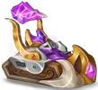 |
Damage (single) |
Activates an energy beam that deals 160% of its damage. | ||||
{kind=link}
| Cloudfist | ||||||
|---|---|---|---|---|---|---|
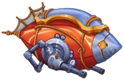 |
Damage (single) |
Launches a rocket that deals 200% of its damage. | ||||
{kind=link}
| FireCracker | ||||||
|---|---|---|---|---|---|---|
| Damage (single) |
Throws a fireball that deals 150% of its damage. | |||||
{kind=link}
| Talos | ||||||
|---|---|---|---|---|---|---|
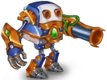 |
Damage (single) |
Launches a rocket that deals 200% of its damage. | ||||
{kind=link}
| Harvester | ||||||
|---|---|---|---|---|---|---|
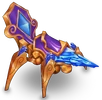 |
Damage (multi) |
Attacks the last 2 war machines in the enemy formation with an energy beam that deals 130% of its damage. | ||||
{kind=link}
| Judgement | ||||||
|---|---|---|---|---|---|---|
| Damage (multi) |
Launches rockets that deal 60% of its damage to all enemy war machines. | |||||
{kind=link}
| Thunderclap | ||||||
|---|---|---|---|---|---|---|
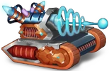 |
Damage (multi) |
Electrifies 3 random war machines for 120% of its damage. | ||||
{kind=link}
| Curator | ||||||
|---|---|---|---|---|---|---|
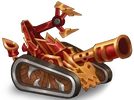 |
Healer | Heals the ally war machine with the lowest percentage of health for 300% of its damage. | ||||
{kind=link}
| Hunter | ||||||
|---|---|---|---|---|---|---|
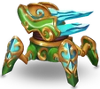 |
Healer | Heals 2 random ally war machines for 350% of its damage. | ||||
{kind=link}
| Sentinel | ||||||
|---|---|---|---|---|---|---|
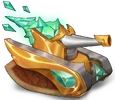 |
Healer | Heals all your war machines for 150% of its damage. | ||||
{kind=link}
| Earthshatterer | ||||||
|---|---|---|---|---|---|---|
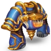 |
Tank | Slams the ground and causes an earthquake that deals 80% of its damage to all enemy war machines. | ||||
{kind=link}
| Fortress | ||||||
|---|---|---|---|---|---|---|
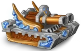 |
Tank | Fires cannonballs at 2 random war machines that deal 60% of its damage. | ||||
{kind=link}
| Goliath | ||||||
|---|---|---|---|---|---|---|
| Tank | Restores 10% of your maximum health. | |||||